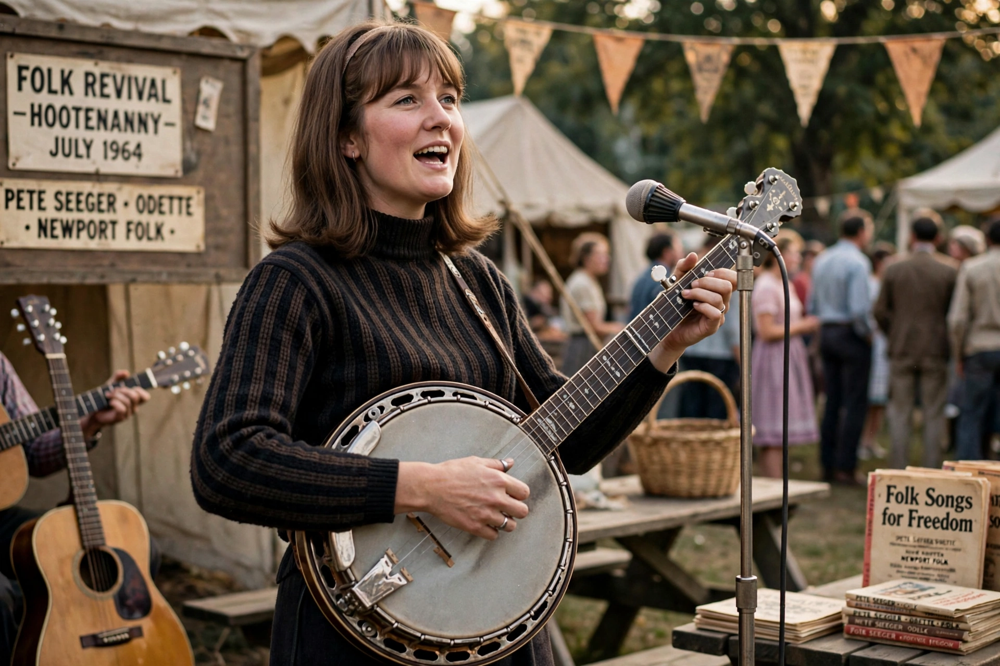

Margaret "Peggy" Seeger (born 17 June 1935) is an American folk singer and songwriter, half-sister of Pete Seeger and a central figure in the British folk revival through her partnership with Ewan MacColl.

Daughter of musicologist Charles Seeger and composer Ruth Crawford Seeger, she toured Europe in the 1950s, was effectively exiled from the US during McCarthyism, and settled in Britain. With MacColl she founded the Critics Group, recorded dozens of albums of traditional and political song, and wrote songs including "The Ballad of Springhill".
MacColl wrote "The First Time Ever I Saw Your Face" for her in 1957. After MacColl's death she returned to the US, taught, and continued recording into her eighties, including the acclaimed album First Farewell (2021).